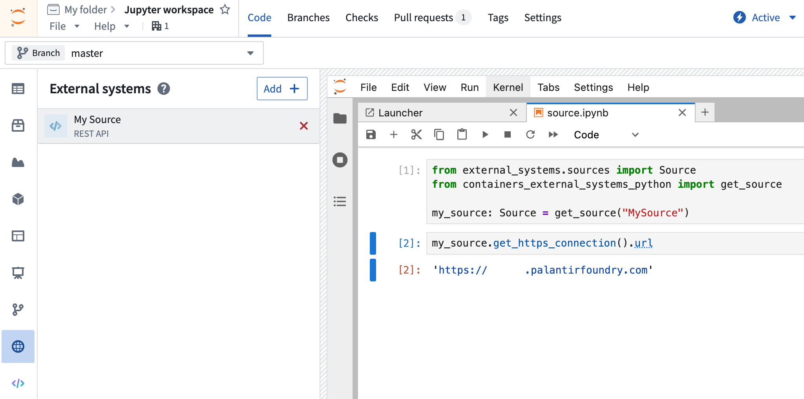
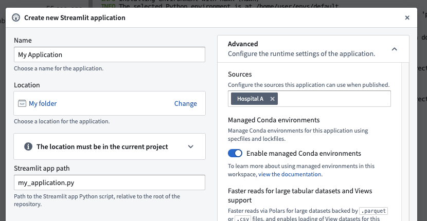
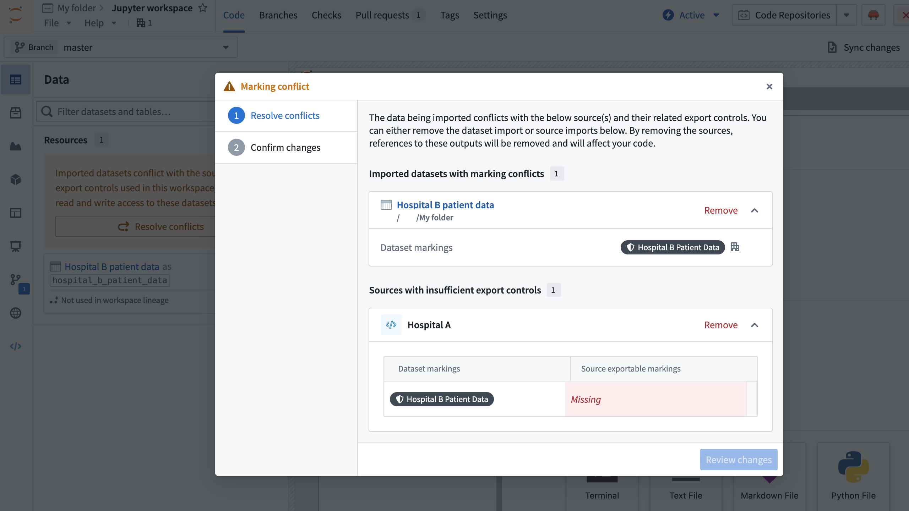

Code Workspaces allows you to use Python to interact with external systems that exist outside of the Foundry platform using sources.
Sources allow you to store and access secrets, configure multiple egress policies at once, monitor usage in code across the platform, manage data export controls, and more. Because it is possible to egress Foundry data from within a code workspace to an external system, you must consider some additional security considerations when using sources with Foundry data.
:::callout{theme="warning"} Sources have replaced network egress policies as the preferred method of interacting with external systems for interactive workflows and publishing applications, except for CBAC-enabled environments. Sources are not yet supported for transforms published from a Code Workspace. :::
To interact with an external system in a Jupyter or RStudio® workspace, first create a source in the Data Connection application, provide an API name, and toggle the setting to allow the source to be imported into code repositories. After you add the source to your workspace and restart your workspace once, you can then interact with the source using Palantir's external-systems Python library.
To use a source in a Jupyter workspace, ensure that the containers-external-systems-python library is installed. Then use the code snippets in the external systems side panel to interact with the source, starting with the following code:
from containers_external_systems_python import get_source
my_source = get_source("SourceApiName")
To retrieve credentials from a source in a Jupyter workspace, use the following approach:
some_secret: str = my_source.get_secret("secretName")

To use a source in an RStudio® workspace, ensure that the containers-external-systems-python library is installed along with reticulate and python. Then use the provided code snippets in R (using the reticulate adaptation of the Python syntax), such as in the following example:
library(reticulate)
source <- import("containers_external_systems_python")$get_source("SourceApiName")
https_connection <- source$get_https_connection()
client <- https_connection$get_client()
response <- client$get(https_connection$url, timeout=10)
response$ok
To retrieve credentials from a source in an RStudio® workspace, use the following approach:
some_secret <- source$get_secret("secretName)
When publishing an application (e.g., Streamlit) that requires a source, you must include that source in the application's "advanced" configuration settings. Users must have access to all included sources or they will not be able to open the application.

Importing a source with exports enabled enforces additional checks on your workspace's security. Most importantly, a dataset with a marking that is not on a source's exportable markings list cannot be used with that source in the same workspace.
For example, if you had a source for an electronic health record system named Hospital A, you might be permitted to use it to export data with the marking Hospital A Patient Data. But suppose that you also had a dataset with the marking Hospital B Patient Data loaded into your workspace: if you were also using the Hospital A source, without checks you would be able to export disallowed Hospital B Patient Data to the Hospital A external system. Code Workspaces enforces these checks on the level of the entire workspace, also known as the workspace lineage, during workspace startup. That is, the incompatible source and dataset cannot be accessed in the workspace simultaneously.
If you have a source loaded into your workspace with an enforced exportable markings list and add a dataset with a non-exportable marking, the workspace will prevent you from accessing that dataset; for example, Dataset.get() will throw an error.
If you initialize or restart a workspace that includes an incompatible source and dataset, you will be prompted to remove either a source or dataset until the conflict resolves. You must then restart the workspace without a checkpoint to resolve this conflict.
